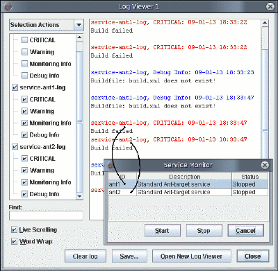

The Service Monitor displays the status of a test suite's services and provides a way to start or stop each service. See your test suite documentation for detailed information about the services it uses.
To open the Service Monitor, select View > Services. To change a service's status, select its row and click Start or Stop. If the test suite generates logs, the logs might display information on service events. The figure below shows a test suite with two services, as seen in the Service Monitor. The Log Viewer displays critical messages corresponding to each service.

See Log Viewer for a detailed description of the Log Viewer.
Copyright © 2010, Oracle and/or its affiliates. All rights reserved.